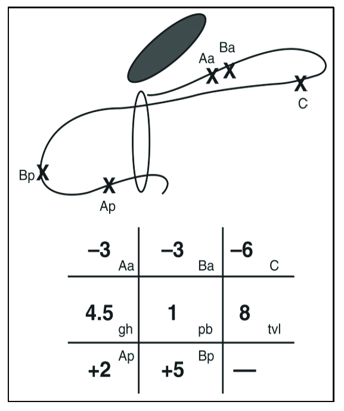

Página 10 · Prolapsos / distopia genital
Do −3 ao estágio 4: a régua que gradua o prolapso
Sei que a parede está para fora — mas isso é um prolapso pequeno que nem opero, ou uma procidência total? A régua responde com o estágio.
CVT: o comprimento vaginal total que define se é prolapso total
O CVT (comprimento vaginal total) é a medida que fecha o essencial do POP-Q: é ela que ajuda a saber se o prolapso é total ou não. Enquanto os pontos dizem onde cada parede está, o CVT dá a régua de referência do canal — e é dele que sai o corte do estágio mais grave.
O ponto B é o de maior prolapso
Entre os dois pontos de cada parede, o ponto B é o de maior prolapso: quando o prolapso anterior ou posterior é grande, é o B (Ba ou Bp) que aparece mais para fora. Sempre há uma diferença entre o A e o B quando o prolapso é acentuado — o A acompanha mais de perto o ponto fixo, e o B se projeta com a parte mais dependente. Por isso a leitura de gravidade vai pelo B.
A régua dos 4 cm no POP-Q: |D − C| > 4 = alongamento (veto separado)
A régua dos 4 cm reaparece, agora em coordenadas: se a diferença ponto D − ponto C for maior que 4 cm (em módulo), é alongamento hipertrófico — no fim das contas, não é prolapso. Exemplo: D em −8 e C em −2 → diferença 6 → alongamento. É a mesma regra dos 4 cm do exame físico, traduzida para os pontos, e cai muito (a SESPE cobrou isso incontáveis vezes). Um cuidado técnico decisivo: esse alerta é um veto separado do estágio — a diferença D−C não muda o número do estágio, ela sinaliza “isto é colo comprido, não prolapso”. Calcula-se com o módulo da diferença.
O corpo perineal (PB) e a rotura do períneo
O corpo perineal (PB) é a distância da parte posterior da vagina até o meio do esfíncter anal. Serve para ver se há alteração — um encurtamento do corpo perineal, por exemplo, após uma ruptura perineal de parto. Não é dos mais cobrados, mas fecha o quadro e conecta o POP-Q à rotura perineal (que aparece adiante, no períneo da Lurdinha).
Os estágios 1, 2 e 3
A régua gradua o prolapso em estágios, pelo ponto mais distal. Estágio 1: o prolapso é menor que −1 (por exemplo −2, que é menor que −1) — um pequeno deslocamento, que provavelmente nem se opera. Estágio 2: entre −1 e +1 (em volta da carúncula himenal, que é o 0); outra forma de guardar é “o estágio 2 tem menos que +2”, porque a partir de +2 já é estágio 3. Estágio 3: maior ou igual a +2. Os valores positivos confirmam a estrutura para fora — quanto mais positivo, maior o prolapso.
O estágio 4 é CVT − 2 — calculado, nunca +6 fixo
O estágio 4 (prolapso total) é maior ou igual a CVT − 2 cm em diante. Não precisa ser igual ao CVT — faltando 2 cm já conta. O detalhe que não pode escapar: o corte do estágio 4 depende do CVT e se calcula a cada caso. Se o CVT é 8 cm, o estágio 4 é ≥ 8 − 2 = ≥ +6; mas +6 é só o exemplo de um CVT específico — jamais um número fixo. Muda o CVT, muda o corte. A leitura final escalona a conduta: estágio pequeno = expectante, nem opera; estágio grande = corrige. A régua não só nomeia o prolapso — escolhe o degrau do tratamento.
A régua-calculadora POP-Q
O corte do estágio 4 é CVT − 2, calculado a cada caso — nunca +6 fixo. Troque o CVT: com CVT 7 o corte é +5; com CVT 8, +6. A regra dos 4 cm (|D − C| > 4 = alongamento) é um veto separado, pelo módulo da diferença.

A grade oficial de registro do POP-Q — os seis pontos organizados em três linhas (parede anterior, ápice, parede posterior) mais as medidas de referência (hiato genital, corpo perineal, CVT). É o formulário oficial de registro do POP-Q.
Persu C et al. J Med Life. 2011;4(1):75-81 (Fig. 4), via PubMed Central. Licenciado sob CC BY. Fonte: PMC.
real de referência — grade oficial POP-Q, distinta do diagrama dos pontosMapa do assoalhoO corpo perineal (PB) medido aqui conecta o POP-Q à rotura do períneo — a coluna que fecha na classificação dos quatro graus.
Quiz — fixação
Numa paciente com CVT de 8 cm, o ponto mais distal do prolapso está em +6. O estágio é:
- B — a virada. O corte do estágio 4 é CVT − 2 = 6; +6 ≥ 6 → estágio 4.
- A. ≥ +2 abre o estágio 3, mas +6 já alcançou o corte do 4 (que depende do CVT) — parar no 3 ignora o CVT.
- C. +6 está muito além da carúncula; estágio 2 é −1 a +1.
- D. a idade não entra no estadiamento — é geometria (pontos + CVT).
- Por que cair. decorar “≥ +2 = estágio 3” sem calcular CVT − 2 faz o aluno parar cedo; o CVT é que sobe o degrau final.
Um exame mostra o ponto D em −8 e o ponto C em −2 (ambos negativos, ápice dentro). A leitura correta é:
- B — a virada. |D − C| = |−8 − (−2)| = 6 > 4 → alongamento (colo comprido), não prolapso — o alerta é um veto separado do estágio.
- A. confunde a diferença D−C (que sinaliza alongamento) com valor de estágio; ela não estadia nada.
- C. há ponto D (−8) — logo há colo, não cúpula.
- D. ambos os pontos estão bem dentro (negativos), longe da faixa −1 a +1 do ponto de prolapso.
- Por que cair. ver “diferença 6” e pensar “grave/estágio alto” troca o eixo — a diferença mede comprimento do colo, não gravidade do prolapso.
Sobre o corte do estágio 4 na régua POP-Q, é correto:
- B — a virada. O corte é CVT − 2, variável com o CVT (CVT 7 → +5; CVT 8 → +6).
- A. o +6 é só o exemplo de CVT 8; fixá-lo é o erro técnico que a régua não pode cometer.
- C. não precisa igualar o CVT — “faltando 2 cm já conta”.
- D. +2 abre o estágio 3, não o 4.
- Por que cair. o exemplo mais repetido usa CVT 8 (corte +6), e é fácil petrificar o exemplo como regra — exatamente o que o cálculo dinâmico evita.
Com a régua na mão, a melhor forma de dominá-la é usá-la: sete números na mesa, e o desafio de cravar o diagnóstico — inclusive o caso em que a resposta certa é “está tudo normal”.